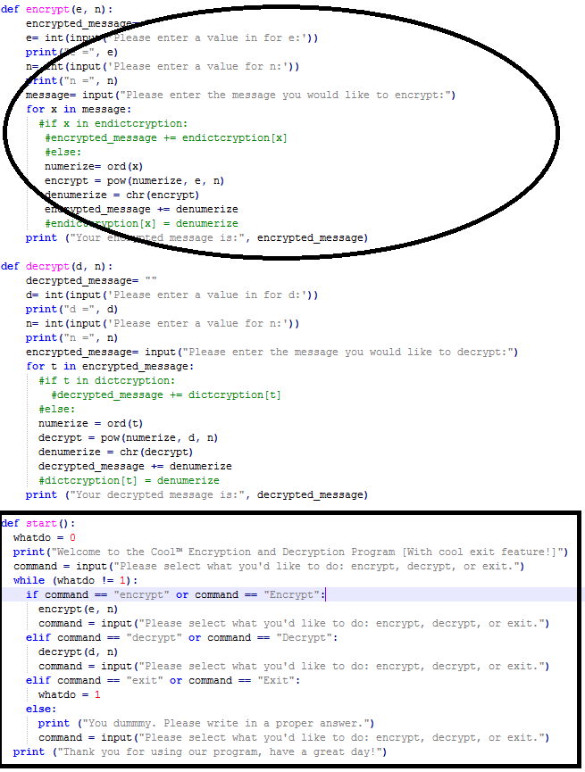
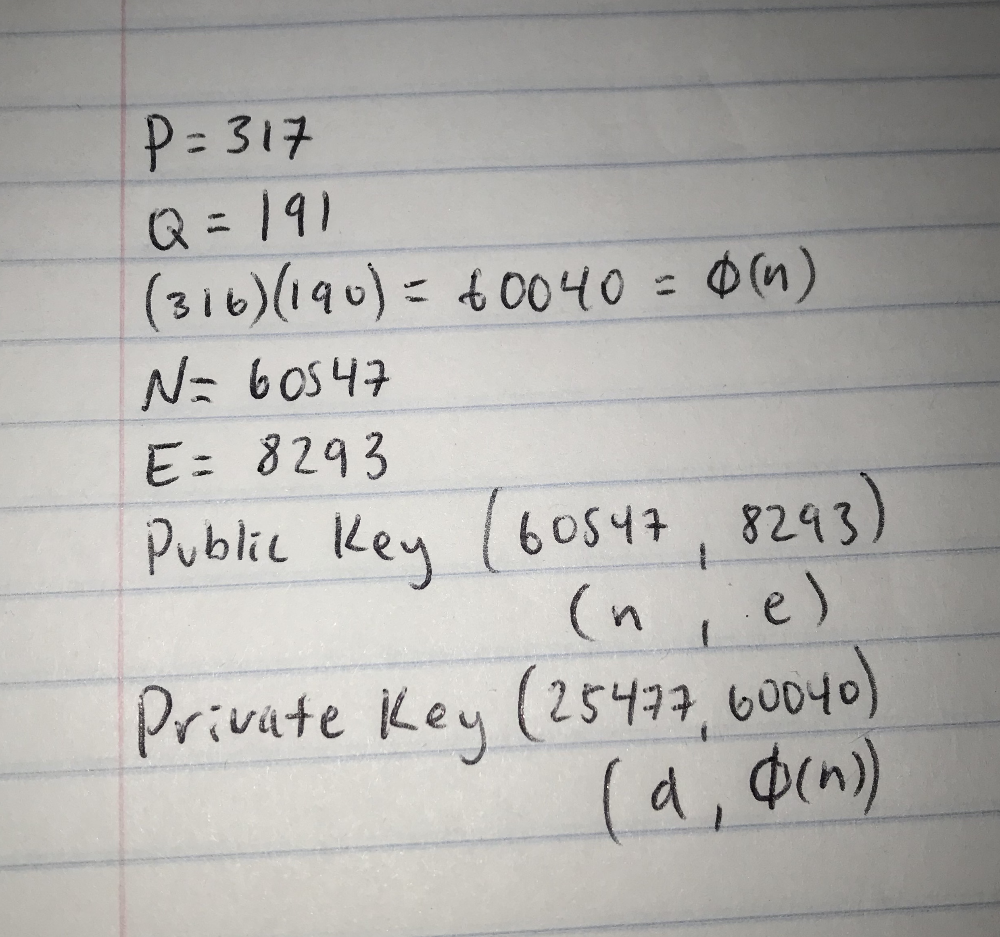

As the app screen opens the branding screen is visible. After it disappears, the beginning screen is visible and the play and about buttons are available to click. Once hitting the play button, the first question appears. By choosing the correct answer, a ding sound happens and the screen moves to the next question. The point of the game is to complete the five questions available. If you get a question wrong, the fail screen will appear and you will have to restart the game. If you can answer all the 5 questions correctly, the win screen will appear meaning you have won the game. If you click on the screen, it will take you back to start screen. If you click on the about button, it will take you to the about page and tell you who created the app.
While making the android app project, there were many difficulties encountered especially with being new to coding. Making a quiz app could have been easy by just making a different screen for each question and going to the next screen for choosing the correct answer etc., but that amount of screens would crash the game. Making it more intricate by mixing up the choices was a real challenge. The first step to figuring out how to change up the options was to learn how to use lists. First we put the choices in the list and used the select random integer function as for each index of each option. Then, so the choices would not repeat, a “remove list item” character was needed. Once we figured out how to do that we realised this would make it easier to change to the next question. We did this by stating that whenever the correct answer was chosen, it would move to the next question. If the wrong answer was chosen, it would go to the fail screen and the player would have to restart the game. Another difficulty we encountered was that the number of screens we wanted would make the game crash. We worked around that by instead of changing screens, we changed the text in the textbox and buttons. This did make the startup of the first question a little slower but in the end would make the game more enjoyable. This also meant we could do the same for the branding screen. Instead of using a whole other screen for the branding screen, we could work around that by instead changing the visibility of it to true at the startup and the screen1 visibility to false and vise versa for the player to actually be able to play the game.
Quiz Challenge AIA Quiz Challenge APK
To make this quiz game we started out by asking the user to add a username. After that the first question is asked. Problems we experinced with coding this started when we wanted to add the guess counter. Originally if we had set it to have a certain amount of guesses. We then realized we could only make it so that it would just count the nuber of guesses it took for them to finish the quiz. The point of the game ended up being to finish it in as little guesses as possible. Another problem experienced happened when we needed to find where the guess counter was going to be. Eventually we found it needed to be in the if statement before it answered whether the question was correct or not.
To start the program the user calls the start function. From there the program welcomes the user and asks them if they would like to encrypt a message, decrypt a message, or exit the program. When the user picks encrypt, the program asks for an e value and an n value. The program logs in the numbers and shows the user it does that by repeating the numbers they have logged after each one. Then the program asks the user to input the message they would like to encrypt. The program then outputs the encrypted message and asks the user the question of the next action they would like to do. When the user calls the decrypt function, the program asks for a d value and an n value. The program logs in the numbers and shows the user it does that by repeating the numbers they have logged after each one, just like it did for the encrypt function. After that the decrypted message is outputted. If a user chooses to input exit, the program then concludes.
To make the project we had to be able to decrypt and encrypt messages. We started by defining both of the functions. To encrypt, the program asks the user for the e and n values and the message they would like to encrypt. For the message given by the user, we coded the program to numerize the characters in the message, encrypt it by using the numbers inputted, denumerize the final values, and then the final message is outputted. For the decrypt function, the program does the opposite of the encrypt function but it uses the d value instead of the e value. The whole program is run under the start function and is run under a while loop. One difficulty while making this program was encountered while incorporating the while loop. The problem was that we didn’t know how to program it using integer values, which is that the while loop uses, instead of the string values we were using. To fix that problem we set it so that the while loop is running as long the user does not input the value ‘exit’. To do that we set ‘exit’ to a value of one and the while loop runs as long as the user does not input the value of one(exit). Another problem encountered happened when we tried running the whole program and it would not work because the start function, which runs the encrypt and decrypt functions, was programmed before the other defined functions, encrypt and decrypt. To fix that I moved the entire start function to ba after the encrypt and decrypt functions.
 